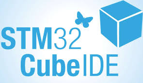
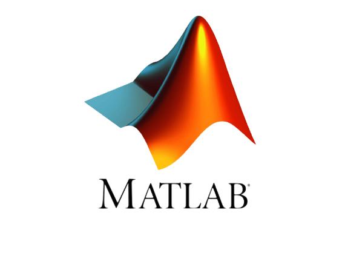

Mes compétences
En tant qu'étudiant en BUT Génie Électrique et Informatique Industrielle (GEII) avec la spécialité Électronique et Systèmes Embarqués (ESE), ma formation est structurée autour du référentiel national de compétences de l'IUT de Montpellier-Sète.
Découvrez ci-dessous les quatre grandes compétences (trois compétences communes et une spécifique à mon parcours) acquises et validées de manière progressive à travers mes projets, mes travaux pratiques et mes expériences professionnelles.
💡 Cliquez sur les cartes de niveau (B.U.T 1, 2, 3) pour afficher le résumé de mes projets associés !
Concevoir la partie GEII d’un système
Analyser, modéliser et développer des architectures matérielles (schémas électroniques, routage PCB) et logicielles (firmwares embarqués bas niveau) en répondant à des exigences techniques et normatives.
Exemples de mises en situation professionnelles :
- Conseil au client en menant une étude de faisabilité à partir d'un cahier des charges
- Chiffrage pour la réalisation d'un prototype ou d’un système industriel en GEII
- Conception d’un prototype ou d’un sous-système à partir d’un cahier des charges partiel
Initiation
Mener une conception partielle intégrant une démarche projet.
- AC11.01 Produire une analyse fonctionnelle d’un système simple
- AC11.02 Réaliser un prototype pour des solutions techniques matériel et/ou logiciel
- AC11.03 Rédiger un dossier de fabrication à partir d'un dossier de conception
Développement
Concevoir un système en fiabilisant les solutions proposées.
- AC21.01 Proposer des solutions techniques liées à l'analyse fonctionnelle
- AC21.02 Dérisquer les solutions techniques retenues
Maîtrise
Concevoir un système en adoptant une approche sélective dans ses choix technologiques.
- AC31.01 Contribuer à la rédaction d'un cahier des charges
- AC31.02 Prouver la pertinence de ses choix technologiques
- AC31.03 Rédiger un dossier de conception
Vérifier la partie GEII d’un système
Élaborer et exécuter des protocoles de mesures et d'essais, diagnostiquer et analyser les dysfonctionnements de prototypes, et valider la conformité de systèmes complets.
Exemples de mises en situation professionnelles :
- Mise en place d'un protocole de tests et de mesures dans les systèmes embarqués
- Mise en place d'un protocole de tests et de mesures dans les process industriels
- Mise en place d'un protocole de tests et de mesures dans la gestion de l'énergie
Initiation
Effectuer les tests et mesures nécessaires à une vérification d’un système.
- AC12.01 Appliquer une procédure d’essais
- AC12.02 Identifier un dysfonctionnement
- AC12.03 Décrire un dysfonctionnement
Développement
Mettre en place un protocole de tests pour valider le fonctionnement d’un système.
- AC22.01 Identifier les tests et mesures à mettre en place pour valider le fonctionnement d’un système
- AC22.02 Certifier le fonctionnement d’un nouvel équipement industriel
Maîtrise
Élaborer une procédure intégrant une démarche qualité pour valider le fonctionnement d’un système.
- AC32.01 Évaluer la cause racine d’un dysfonctionnement
- AC32.02 Proposer une solution corrective à un dysfonctionnement
- AC32.03 Produire une procédure d’essais pour valider la conformité d’un système
Assurer le maintien en condition opérationnelle d'un système
Diagnostiquer les pannes, effectuer des opérations de maintenance préventive et corrective, et définir une stratégie de maintenance globale pour des équipements industriels ou embarqués.
Exemples de mises en situation professionnelles :
- Maintenance corrective, préventive et améliorative dans les systèmes embarqués
- Maintenance corrective, préventive et améliorative dans les process industriels
- Maintenance corrective, préventive et améliorative dans les domaines de l'énergie
Initiation
Ce niveau regroupe l'assimilation des concepts généraux de maintenance industrielle et d'instrumentation préparant aux interventions techniques directes.
Développement
Intervenir sur un système pour effectuer une opération de maintenance.
- AC23.01 Exécuter l’entretien et le contrôle d’un système en respectant une procédure
- AC23.02 Exécuter une opération de maintenance (corrective, préventive, améliorative)
- AC23.03 Diagnostiquer un dysfonctionnement dans un système
- AC23.04 Identifier la cause racine du dysfonctionnement
Maîtrise
Mettre en place une stratégie de maintenance pour garantir un fonctionnement optimal.
- AC33.01 Proposer une solution de maintenance
- AC33.02 Évaluer les coûts d’indisponibilité et de maintenance d’un système
- AC33.03 Produire une procédure de maintenance
- AC33.04 Proposer un appui technique aux différents acteurs à l'échelle nationale et internationale
Implanter un système matériel ou logiciel (Spé. ESE)
Intégrer et fabriquer des systèmes matériels, déployer et installer des briques logicielles, assurer la mise en service sur site et rédiger les livrables de conformité.
Exemples de mises en situation professionnelles :
- Implantation d’une solution matérielle ou logicielle dans une partie ou sous-partie d’un système
- Intervention chez un client pour la mise en place d’un système
- Homologation d’un protocole de réalisation pour un nouvel équipement industriel
Initiation
Ce niveau valide les apprentissages pratiques d'atelier (soudure, prototypage de base) nécessaires avant d'aborder l'implantation et la qualification qualité des niveaux supérieurs.
Développement
Réaliser un système en mettant en place une démarche qualité en conformité avec le dossier de fabrication.
- AC24.01ESE Appliquer une procédure de fabrication pour implanter les composants matériels et/ou logiciels dans un système
- AC24.02ESE Évaluer la conformité du système
Maîtrise
Interagir avec les différents acteurs lors de l’installation et de la mise en service d’un système, dans une démarche qualité.
- AC34.01ESE Produire une procédure d’installation et de mise en service d’un système
- AC34.02ESE Exécuter la mise en service d’un système en respectant la procédure
- AC34.03ESE Produire le dossier de conformité du système en gérant le versionnage
Compétences transversales
Au-delà des compétences du référentiel national, ma formation et mes projets m'ont permis de maîtriser un ensemble d'outils logiciels et de langages de programmation directement appliqués dans mes réalisations.
Langages de programmation
Logiciels & outils
Conception électronique & PCB
Environnements de développement

Modélisation 3D & CAO mécanique

Développement logiciel & Test

Calcul & simulation numérique

Systèmes embarqués & SBC